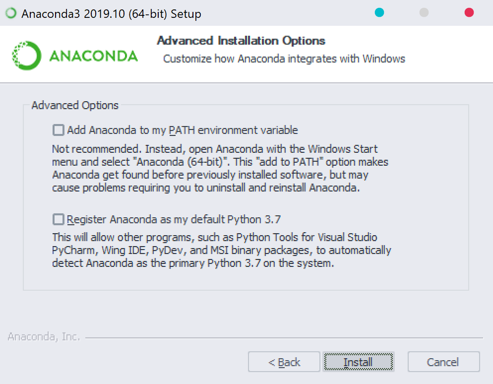
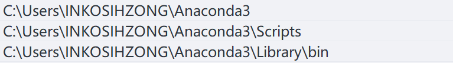
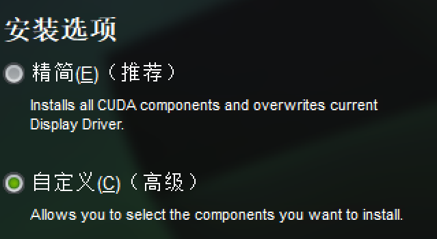
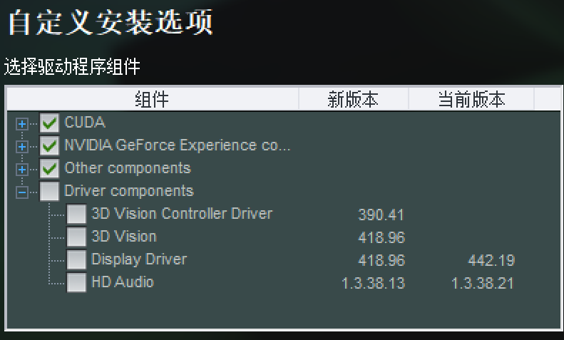

出于组内的计算机视觉项目，在尝试过OpenCV支持的Cascade Classifier以及Canny算法后效果仍低于预期，进而决定涉足神经网络开发。
OpenCV在3.x版本中加入对DNN支持，并且如今支持的接口仍在不断增多。
伊始，辗转
根据官方Tutorials文档，没有涉及到DNN模型的训练内容。进而推测，模型的训练需要额外的支持。文档中提及Caffe，但在安装的过程中，无意搜索到Caffe2的存在。阅读相关文档后，决定暂时抛弃对Caffe或Caffe2的选择，更为激进地更换了于19年末刚刚更新至2.x版本的Tensorflow。
其实Tensorflow绝不会是一本万利的选择，能够搜索到的参考文件和教程里，Python以压倒性的优势霸占了版面。Tensorflow的学习成本包含了Python的学习研究成本。
对应配置
CONSTRUCT：x64
PYTHON: 3.7.6
Compiler：VisualStudio Community 2019
MODEL：NVIDIA RTX2080Ti
Driver：442.19(>418.x)
CUDA SUPPORT：7.5(>=3.5)
CUDA TOOKIT:10.1
cuDNN:7.6.5(>=7.6)
在此提醒，DNN的环境搭建限制非常多，很多步骤需要更换匹配自己硬软件配置选择，具体要求于上述链接
过程
Virtualenv
Virtualenv包可创建Python虚拟环境，使用pip3一条指令安装pip3 install -U pip virtualenv
但由于在后续环节出错，最终我并未使用该包，详见下文。
Anaconda3
作为替代，选择Anaconda3,安装过程中选择只为当前用户安装否则使用管理员权限打开，并取消勾选添加到环境变量。

待安装程序结束后，添加以下三个路径。

虚拟环境
Virtualenv
在CMD中依次输入以下指令，其中前2个指令分别创建并激活了虚拟环境；指令3、4用于检验；指令5用于退出虚拟环境，在结束配置前不要输入。
C:\> virtualenv --system-site-packages -p python3 ./venv
(venv)C:\> .\venv\Scripts\activate
(venv)C:\> pip install --upgrade pip
(venv)C:\> pip list # show packages installed within the virtual environment
(venv)C:\> deactivate # don't exit until you're done using TensorFlow然而我在指令1处产生错误，提示
OSError: [WinError 1920] 系统无法访问此文件。: 'C:\\Users\\INKOSIHZONG\\AppData\\Local\\Microsoft\\WindowsApps\\PythonSoftwareFoundation.Python.3.7_qbz5n2kfra8p0\\python.exe'设法解决无果，遂更换Anaconda3方案。
Anaconda3
安装Anaconda3主要的目的是使用conda指令,在此只列出前2个指令
$ conda create -n venv pip python=3.7 # select python version
$ source activate venv该指令使用CMD可能会产生报错，推荐使用随Anaconda3安装的Anaconda Prompt(Anaconda3)。
Tensorflow
准备工作已经完毕，可以使用pip一条指令安装以及确认
pip install --upgrade tensorflow
python -c "import tensorflow as tf;print(tf.reduce_sum(tf.random.normal([1000, 1000])))"若希望只使用CPU进行训练，至此结束。
GPU支持
对于高处理能力GPU，令其进行DNN训练的算力是很可观的，通常可以达到CPU运算速度的数倍。
在此，只涉及到NVIDIA显卡的说明。
根据以上对应配置模块提供的信息，找到匹配自己软硬件的CUDA、cuDNN版本。
CUDA
下载后打开，自动解压到所选路径后开始安装。安装时可选自定义，若显卡驱动版本高于CUDA安装版本，可取消勾选Driver，否则会重装驱动。


cuDNN
下载后解压，将其中文件夹内文件合并于CUDA安装目录下同名文件夹内。默认路径：C:\Program Files\NVIDIA GPU Computing Toolkit\CUDA\v10.1